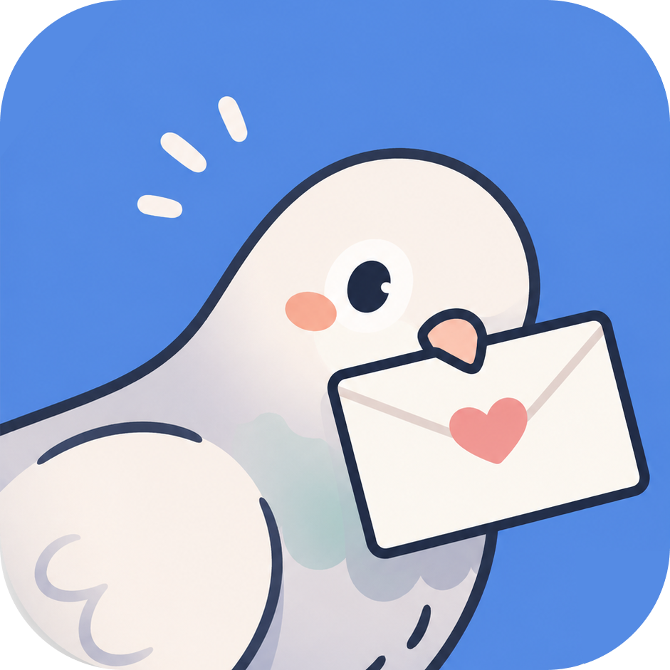
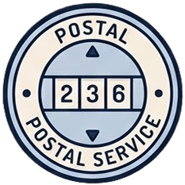
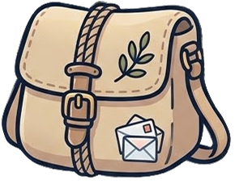

你的菜单栏里，
多一只 看着仓库 的小信鸽。
In your menu bar,
a pigeon quietly watching your repos.
AI 让一个人同时写 10 个项目 —— Pilo 替你看着全部：
哪个还在 draft、哪个 30 天没动、常用 prompt 一键召唤，傍晚 18:00 一封信回顾今天。
顺便，push 之前替你过一眼。
AI lets one person juggle ten projects — Pilo watches them all:
what's drafting, what's gone quiet, your prompts one tap away, and at 18:00 a letter to close the day.
And one careful look before you push.
纯本地 · 不调 LLM · 代码不离开 Mac Local · No LLM · Your code stays put

和 AI 一起编程，
难的不是写代码 —— 是 记住。
Coding with AI —
the hard part isn't writing.
It's remembering.
仓库一堆，散在各处 Repos scattered everywhere
你 Mac 上到底有多少 Git 仓库？昨晚的 wip 在哪？哪个还没 push？哪个 30 天没动过？ How many Git repos on your Mac, exactly? Where's last night's wip? What hasn't been pushed yet? What's been untouched for 30 days?
脑子里那张地图，越用 AI 越糊。 That mental map gets blurrier the more AI you use.
常用 prompt，每次找一通 Your prompts, lost in folders
Cursor 那个用了 50 次的 system prompt 存哪了？Notion？Apple Notes？commit-message 模板旁边？ That Cursor system prompt you've used 50 times — where did you save it? Notion? Apple Notes? Next to a commit-message template?
每次找一遍，等于多写一遍。 Every search wastes another minute of writing.
一天结束，糊一片 End of day, blurred
今天到底动了哪些项目？跑了哪些 AI？最后一个 commit 是几点？写了多少行？ Which projects moved today? Which AIs did you run? When was the last commit? How many lines?
GitHub 的小绿格回答不了这些。 Those little green squares on GitHub won't tell you.
不只是安全检查 ——
它陪你走完每一个仓库。
More than a scanner —
a companion for every repo.
Pilo 把 git 这件冷冰冰的事，写成了一段日常仪式。 Pilo turns the cold ritual of git into something almost warm.
仓库陪伴 Repo companion
Pilo 自动发现你 Mac 上所有 Git 仓库，分活跃 / 静默 / 沉寂三段。走进任一个，小信鸽按情境跟你打招呼：「桌上 N 件待寄」「昨天来过」「已 30 天没见」。 Pilo discovers every Git repo on your Mac and sorts them — active, idle, dormant. Step into any one, the pigeon greets you in context — "N drafts on the desk", "saw you yesterday", "30 days, welcome back".

每日邮局信件 Daily Letter
每天 18:00 一封。今日寄出、草稿中、各仓库的进度 —— 写在暖白信纸上，配旋转邮戳水印。 Every 18:00, a letter. What you shipped, what's drafting, every repo's mood — on warm paper with a tilted postal-dial watermark.
邮票本浮动 Dock Stamp Panel · floating dock
屏幕边缘一张小邮票 —— 点开就是你常用 prompt 的扇形抽屉。「钉到首位 ✦」让最常用的永远在第一位。 A stamp pinned to your screen edge — tap and your favourite prompts fan out. Pin ✦ keeps the ones you reach for first.

Push 前安全检查 Push-time safety
25 条 secret 规则 · 6 类误提交守护 · 全本地。.env、id_rsa、超大 blob 都在清单上。误报两档持久标记，二次 push 不再骚扰。
25 secret rules · 6 commit-guard categories · all local. .env, id_rsa, oversized blobs — all on the checklist. False-positives persist at two scopes; second push, quiet.
美 = 留得下来。大多数开发者工具像电子表格 —— 密集、方正、中性。Pilo 像一封信。 Beauty is what keeps a tool around. Most developer tools are built like spreadsheets — dense, square, neutral. Pilo is built like a letter.
宋体衬线 · 暖纸色 · 金色装饰线 · 暖白信纸卡 · 旋转邮戳 · 真鸽子。在 AI 几秒生成一个 PR 的时代，慢一拍的设计反而能让人留下来。同样的克制，落在了「它怎么和你的电脑相处」上 —— Songti serif, warm paper, gold ornament lines, paper cards, rotated postage, a real pigeon. In an age where AI ships PRs in seconds, the design that slows you by a half-beat is what makes you stay. The same restraint applies to how it lives on your machine —
不调 LLMNo LLM calls
所有检测是确定性规则 + 熵阈值。没有 prompt，没有云端模型。 All detection is deterministic rules + entropy. No prompts, no cloud models.
代码不上传No code uploaded
diff、commit、文件名只在本机被读。元数据写到 ~/Library/Application Support/Pilo/。
Diffs, commits, filenames — read only on your machine. Metadata stays in ~/Library/Application Support/Pilo/.
不收 telemetryNo telemetry
没有埋点、analytics、错误上报。开源代码是最好的收据。 No tracking, no analytics, no error reports. The open source repo is your receipt.
唯一的网络请求 —— 调一次 GitHub 公开 API 判断仓库公开/私有（无 token、24h 缓存）。grep URLSession 整个仓库，只有一处。
The only network call — GitHub's unauthenticated public API to check repo visibility (no token, 24h cache). grep URLSession across the whole repo: exactly one hit.
今天 —— 从源码编译。 Today — build from source.
签名 DMG 还在路上。想让它早点到？给仓库一颗 star。 A signed DMG is still on the way. Star the repo if you'd like it sooner.
# 第一次安装 xcodegeninstall xcodegen once $ brew install xcodegen # 拿代码 + 生成 Xcode 项目clone + generate $ git clone https://github.com/emma-yu/Pilo.git $ cd Pilo $ xcodegen generate $ open Pilo.xcodeproj
几个老实回答。 Three honest answers.
Pilo 和 GitHub Desktop / Fork 这种客户端有什么区别？ How is Pilo different from GitHub Desktop / Fork?
GUI 客户端管的是一个仓库 —— Pilo 管的是你所有仓库。GitHub Desktop / Fork / Sourcetree 帮你看一个项目的 commit / branch / push 流程。Pilo 站在更高的视角 —— 自动发现你 Mac 上每一个 Git 仓库，把活跃 / 静默 / 沉寂状态摊开给你看。 GUI clients manage one repo. Pilo manages all of them. GitHub Desktop, Fork, Sourcetree help you with the commit / branch / push flow inside a single project. Pilo zooms out — discovers every Git repo on your Mac, lays out their active / idle / dormant moods at a glance.
每天傍晚 18:00 把今天动过的项目用一封信汇总，常用 prompt 在屏幕边缘一键召唤。它们在不同的图层 —— 同时用，不冲突。 At 18:00 it mails a letter summing up what moved, and your favourite prompts fan out from a stamp at the screen edge. They live on different layers — use both.
macOS only？我是 Linux / Windows 用户。 macOS only? I'm on Linux / Windows.
老实说：是的。Pilo 用 NSPanel、FSEventStream、UNUserNotificationCenter 这些原生 API，才换来菜单栏常驻 + 邮票本浮动 dock 的体验。设计取舍是显式的 —— 我们要写一个像 Mac 软件的 Mac 软件。
Honestly — yes. Pilo leans on NSPanel, FSEventStream, native notifications — the APIs that make the menu-bar presence, floating dock, and system integration possible. The choice is explicit: a Mac app that feels like a Mac app.
代码是 MIT —— 欢迎 fork 跨平台版本。 The code is MIT — fork a cross-platform sibling if you'd like.
怎么相信你说的"本地"？ How do I trust the "local-only" claim?
最直接的方式 —— 读源码。Pilo 在 github.com/emma-yu/Pilo 完全 MIT 开源。唯一的网络请求写在 GitHubVisibility.swift 一个文件里。grep URLSession 整个仓库，只有这一处。
The directest way — read the source. Pilo is fully MIT-open at github.com/emma-yu/Pilo. The only network call lives in GitHubVisibility.swift. grep URLSession across the repo — exactly one hit.
如果你不想要那一次：在设置里关掉，整个 app 零网络。 Don't want even that one? Disable it in Settings — zero network from then on.